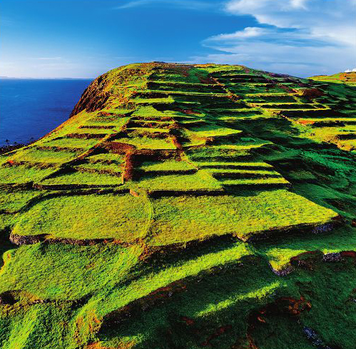
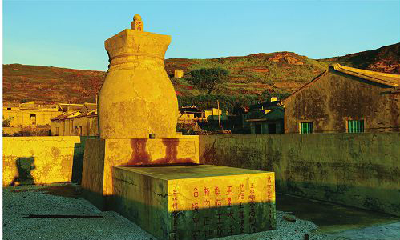
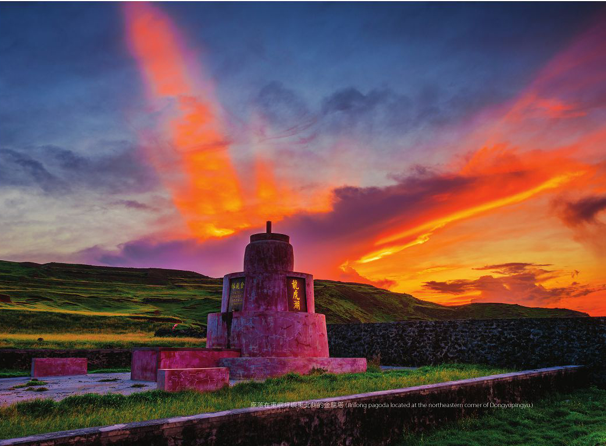
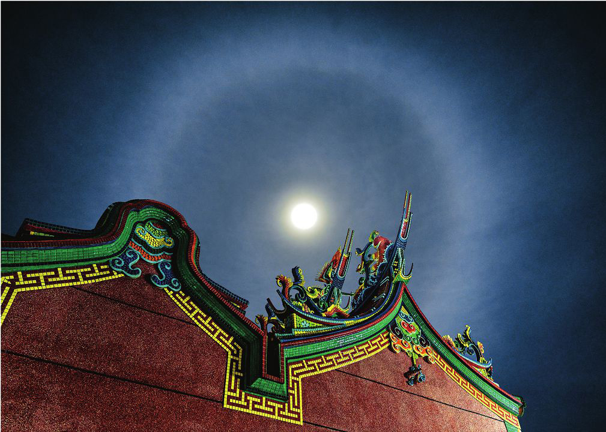

LOGO

澎湖一直以來都有強勁的東北季風，為了讓脆弱的農作物在冬天裡還能照常順利生長，維持作物的生生不息，便有了「菜宅」的出現。菜宅雖現因人口流失而佈滿雜草，然而斑駁的遺跡，卻是昔日農耕的最佳印證。


池府塔位於東嶼坪的西海岸與東海岸的「金龍塔」相對，為高約6公尺的葫蘆型水泥塔，皆用以保護村莊祈求平安。

水泥建造的三階圓錐狀的地理風水塔，塔高約6公尺，塔身則漆成顯眼的紅色，面海之處則有加高石牆用以避邪。

位於東嶼坪嶼遊客中心南側，為島上信仰中心，每年農曆6月16日當地會舉辦廟會慶賀池府王爺誕辰。
Burger